Ghostty-powered terminal
Render remote PTY bytes locally with libghostty on native platforms and WebAssembly in the browser.
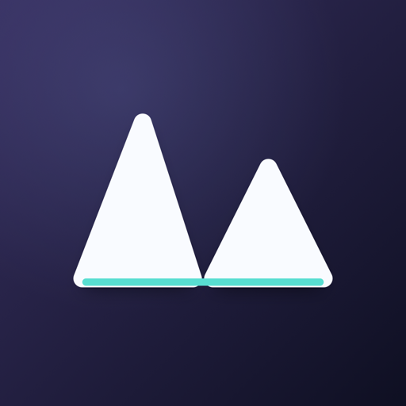
MotifRemote terminal, files, and git in one live session
Run your workdir, shells, file operations, and git state on one machine. Attach from any lightweight client and see the same session.
iOS on the App Store. macOS, Android, Linux, and Windows on GitHub Releases. Web runs in the browser.
Open source (MIT/Apache-2.0) and self-hosted. No account or sign-in—your code stays on the machine running motifd.
What Motif is
Motif combines a Rust server named motifd with Flutter clients. The server owns the workdir, PTY pool, filesystem operations, and git diff. Clients are thin surfaces that attach, detach, and reconnect.
The result feels like code-server plus tmux attach: open the same session from your laptop, phone, tablet, desktop app, or browser and keep seeing the same file tree, terminals, and diff.
Everything in the session
Motif focuses on the daily remote development loop: terminals, files, diffs, connection setup, and cross-device continuity.
Render remote PTY bytes locally with libghostty on native platforms and WebAssembly in the browser.
Sessions live on the server with their workdir and terminal state even when a client disconnects.
Multiple clients attach to the same session and observe the same PTY output, file tree, and git state.
Browse, create, rename, delete, preview, edit, and resolve write conflicts inside the server workdir.
Review all changes or per-file diffs without leaving the remote session.
Use reusable command sets, sticky modifiers, and an editor for fast mobile and desktop terminal input.
Reach motifd over embedded Tailscale (tsnet), relay, or motif://pair links and QR, with certificate pinning and psk-derived bearer auth.
motifd can serve the Flutter Web client from the same origin as RPC, events, and PTY streams.
Desktop builds can run motifd in-process, managed from the Server view or system tray.
Connect over SSH and Motif can download, install, and start motifd on the remote host automatically when it is missing.
Native clients support voice input, photo attach, image view, and terminal-focused interaction helpers.
E2E push uses AES-256-GCM and native APNs paths without Firebase in the iOS flow.
Product walkthrough
These are real macOS and iPhone captures connected to the hk.hq motifd review server: session management, terminal attach, files, git diff, mobile input helpers, settings, and the embedded server view.
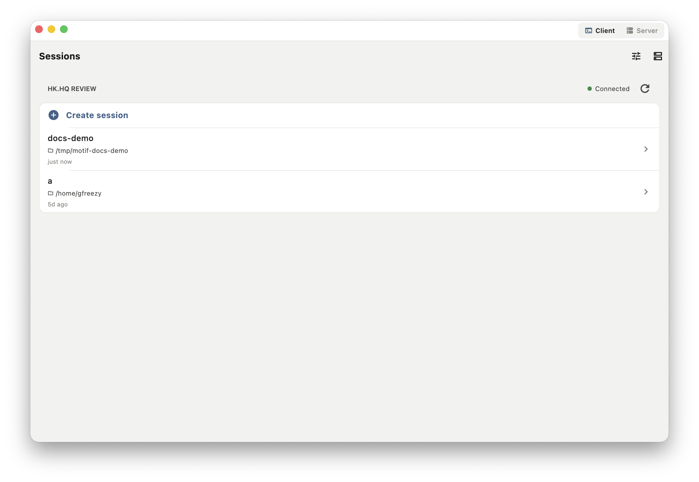
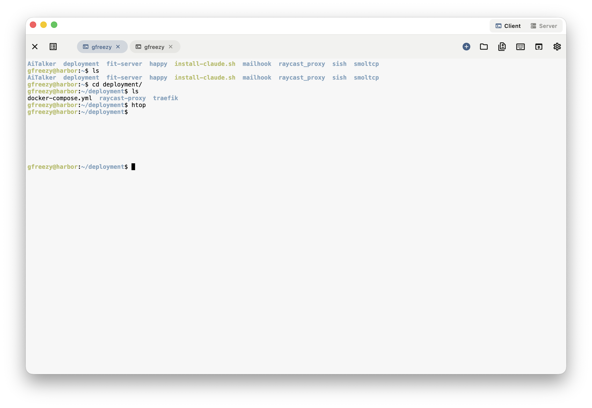
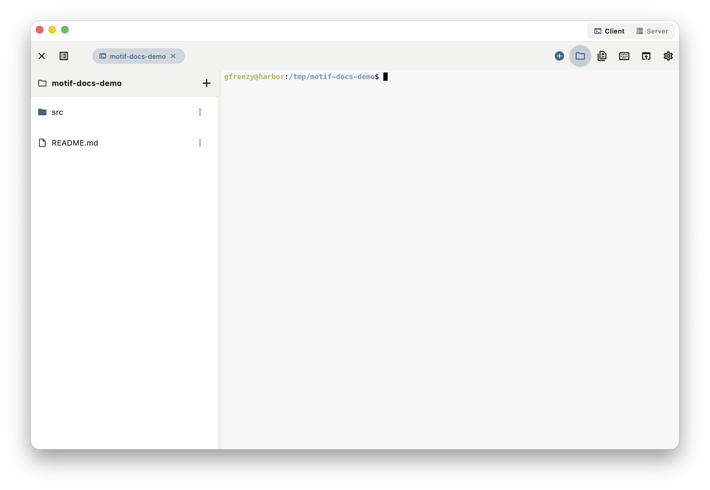
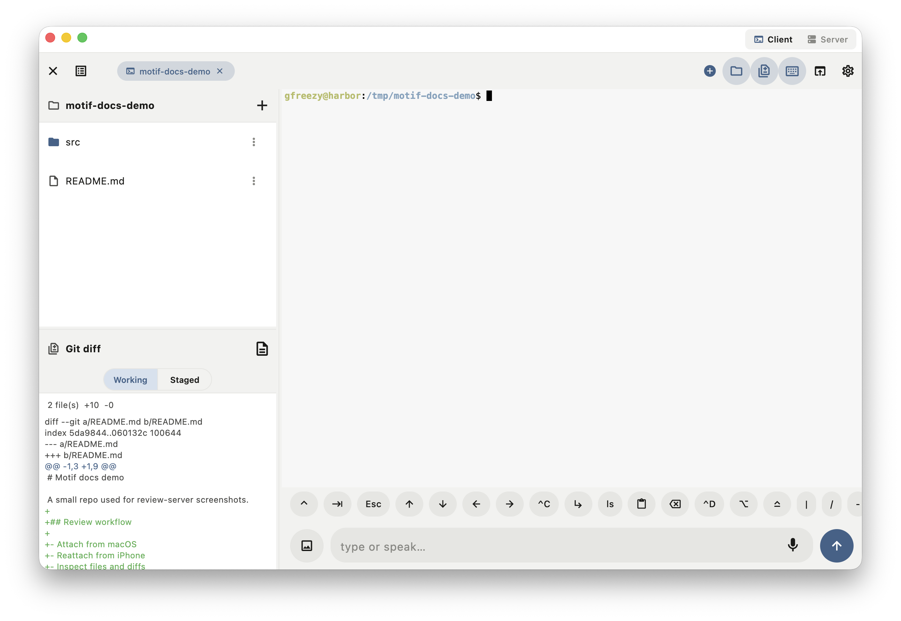
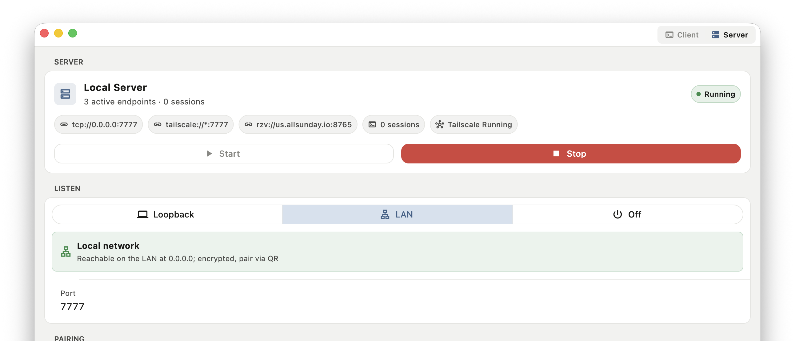
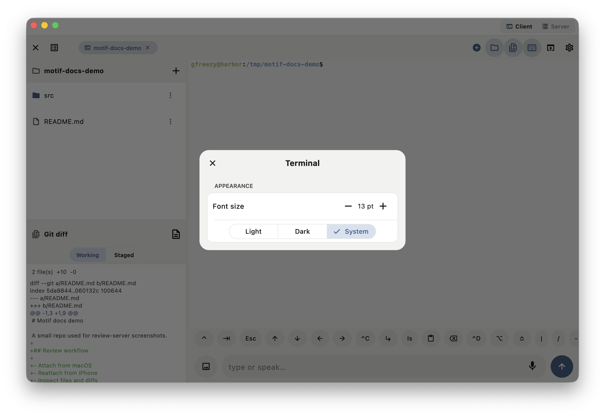
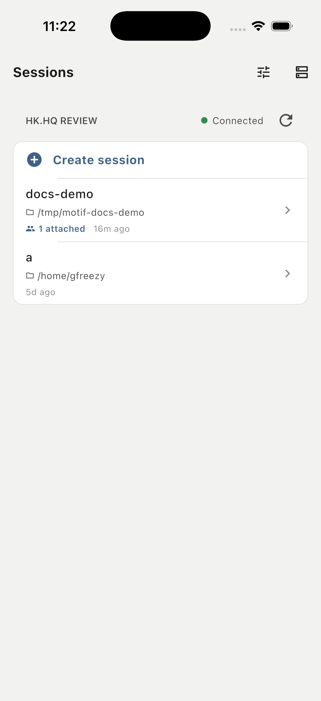
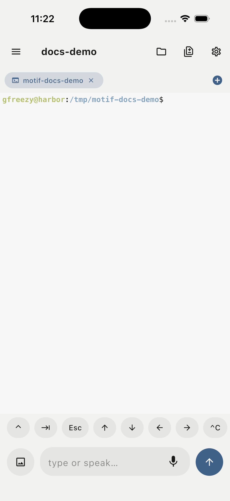
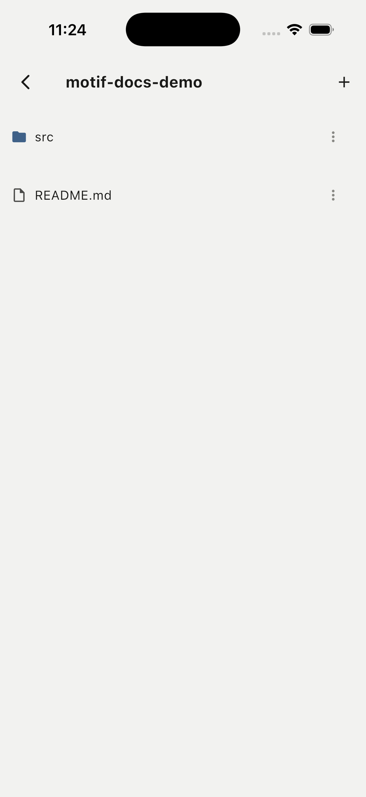
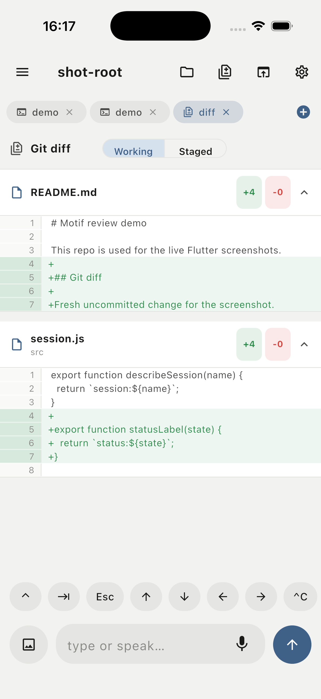
How it compares
Motif keeps one authoritative session on the server and mirrors it to native clients on every device—with files, git diff, and built-in connectivity. Here is how that compares to the usual setups.
✓ built in · ~ with extra setup · — not really
Two ways to run
Every session lives in a motifd server. Desktop apps include motifd—run it locally in one click. Mobile, web, and other desktops attach to a motifd you run on a computer or server.
Deploy motifd on a VPS, cloud box, remote workstation, or long-lived dev machine. Clients attach from anywhere that can reach it.
docker run -d --name motifd --restart=unless-stopped \
-p 7777:7777 \
-v motifd-data:/data \
-v "$PWD:/work" \
-e MOTIFD_ADVERTISE_HOST=<host> \
ghcr.io/xiachufang/motifd:latestThen read the pairing link from the logs and scan or paste it in any client:
docker logs motifd 2>&1 | grep -o 'motif://pair[^ ]*'The desktop app ships motifd built in—no separate install. Start the embedded server from the Server view or tray, then connect from mobile, web, or another desktop.
Connection paths
How it fits together
RPC, event streams, and PTY streams share one protocol surface. The web client can be embedded by motifd, while native clients use the same server model through HTTP and WebSocket transports.
Security model
Motif treats the machine running motifd as the trusted execution environment. Shell commands run with that user's permissions, and workdir access is bounded by the server-side path checks.
FAQ
No. The workdir stays on the machine running motifd. Clients operate remotely and render the current server state.
Yes for loopback, SSH-forwarded, or trusted HTTPS origins. Browsers cannot pin Motif's self-signed cert for network pairing, so native apps are recommended there.
The client detaches. The session continues on the server until you destroy it or stop motifd.
No. The current product is a remote development surface, not an LLM agent. It focuses on sessions, terminals, files, git, and connectivity.
The Flutter client targets iOS, macOS, Android, Web, Linux, and Windows. Desktop builds can include the embedded server path.
Not necessarily. For an SSH server, enable Auto initialize and the desktop app downloads, installs, and starts motifd on the remote host (Linux or macOS, x86_64 or arm64) when it is missing. On your own computer, motifd is built into the desktop app.
Motif is open source (MIT/Apache-2.0) and free to self-host. There is no account or sign-in—clients pair directly with your motifd over pinned TLS, and nothing is sent to a third-party service.
Motif is actively developed and ships tagged releases. Check the GitHub Releases page for the current version and changelog.
A single motifd binary on Linux or macOS (x86_64 or arm64). Use the Docker image on a Linux host, or run the binary directly. No database or extra services are required.
Browse the docs/ folder in the GitHub repo—usage, rpc, tailscale, and web-client guides. For help or bug reports, open a GitHub issue.